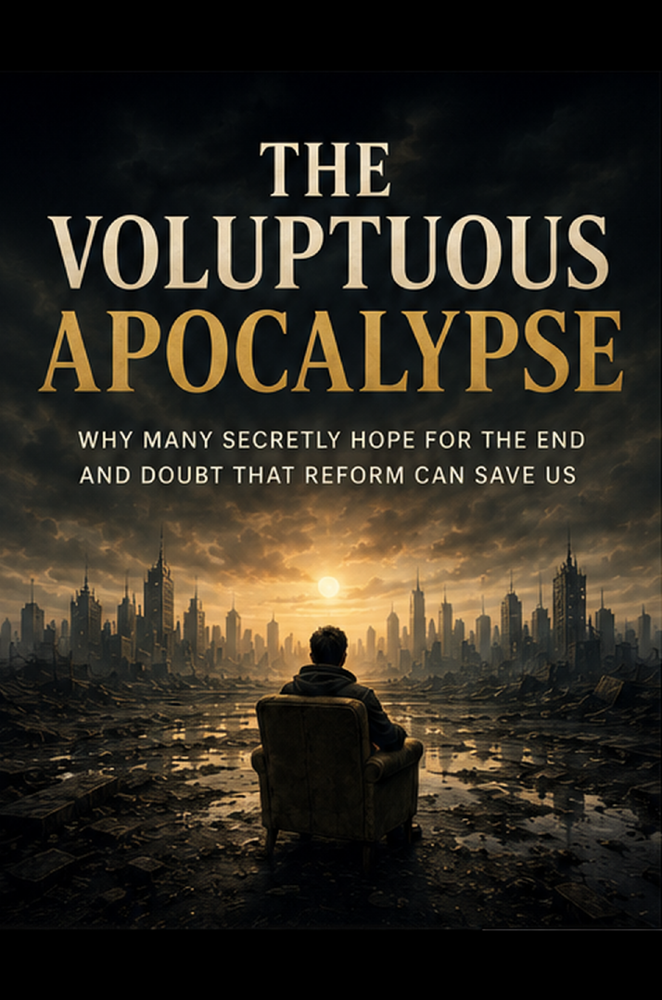

Power, Institutions & Society · Axiologic Research Editions
The Voluptuous Apocalypse
Why Many Secretly Hope for the End and Doubt That Reform Can Save Us
Investigate the relief that fantasies of ending can offer, then ask how criticism, exit, repair, and simplification can become more than a wish for the meteor.
The relief hidden inside fear
Apocalypse is frightening, but it can also promise a clean break from obligations that feel permanent and systems that appear incapable of forgetting. The book takes this ambivalence seriously. Fantasies of the meteor often reveal a diagnosis of exhaustion, powerlessness, and social accumulation.
Recognizing that diagnosis does not make the fantasy harmless. Collapse redistributes harm; it rarely delivers an impartial blank page.
When reform becomes camouflage
Organizations can absorb criticism by creating language, committees, and procedures that alter appearances while leaving decision rights intact. When this happens repeatedly, reform itself becomes evidence of futility and apocalyptic desire gains emotional credibility.
The wish for zero can be a protest against systems that refuse to make room for ending, repair, or release.
After the desire for ruins
The alternative is not compulsory optimism. It is a more exact politics of deletion, exit, simplification, redistribution, and consequences. The book asks what reforms would actually change power—and how a desire for endings might be translated into institutions capable of ending what should end without sacrificing those least able to escape.